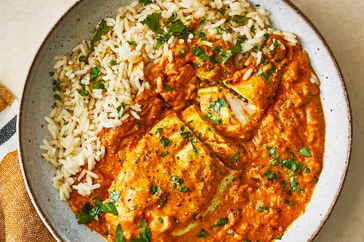

CHICKEN CURRY RECIPE
This is a really good recipe for spicy Indian chicken curry. It's pretty easy to make and tastes better than takeout!
Preparation Time: 20mins
Total Time: 1hr
Servings: 6

Directions To Cook
-
Gather all ingredients.
1. 2 pounds skinless, boneless chicken breast halves
2. 2 teaspoons salt
3. ½ cup cooking oil
4. 1 ½ cups chopped onion
5. 1 tablespoon minced garlic
6. 1 ½ teaspoons minced fresh ginger root
7. 1 tablespoon curry powder
8. 1 teaspoon ground cumin
9. 1 teaspoon ground turmeric
10 .1 teaspoon ground coriander
11. 1 teaspoon cayenne pepper
12. 1 tablespoon water
13. 1 (15 ounce) can crushed tomatoes
14. 1 cup plain yogurt
15. 1 tablespoon chopped fresh cilantro
16. 1 teaspoon salt
17. ½ cup water
18. 1 teaspoon garam masala
19. 1 tablespoon chopped fresh cilantro
20. 1 tablespoon fresh lemon juice
-
Sprinkle the chicken breasts with 2 teaspoons salt. Heat oil in a large skillet over high heat; partially cook the chicken in the hot oil in batches until completely browned on all sides. Transfer browned chicken breasts to a plate and set aside.
-
Reduce the heat to medium and add onion, garlic, and ginger to the oil remaining in the skillet. Cook and stir until onion turns soft and translucent, 5 to 8 minutes. Stir curry powder, cumin, turmeric, coriander, cayenne, and 1 tablespoon of water into the onion mixture; allow to heat together for about 1 minute while stirring.
-
Add tomatoes, yogurt, 1 tablespoon chopped cilantro, and 1 teaspoon salt to the mixture; stir to combine.
-
Return chicken breast to the skillet along with any juices on the plate. Pour in 1/2 cup water and bring to a boil, turning the chicken to coat with the sauce. Sprinkle garam masala and 1 tablespoon cilantro over the chicken.
-
Cover the skillet and simmer until chicken breasts are no longer pink in the center and the juices run clear, about 20 minutes. An instant-read thermometer inserted into the center should read at least 165 degrees F (74 degrees C).
-
Drizzle with lemon juice to serve.